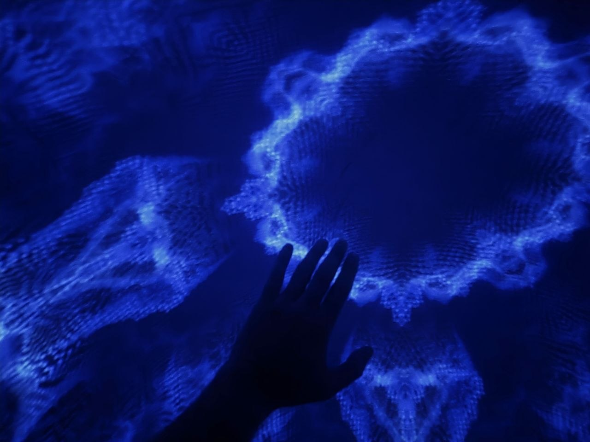

מה שממשיך אחרי שהמילה נגמרת
שוכבים על הגב בתוך כיפת הקרנה 360°, אוזניות, מוזיקת טראנס בעוצמה מלאה. שעתיים. בלי משקפי VR.
לא לרקוד אליה. לצלול בה.
מוזיקת טראנס שכוסחת את הקשב. כיפה שמסלקת את ה״מחוץ״. והגבולות בין הצליל, התמונה והמילה כבר אינם ברורים.
כניסה
מגיעים, מתכנסים, מתיישבים על המזרן. בוחרים שאלה, כוונה, או רק נשימה.
הצלילה
מוזיקת טראנס, הקרנות 360°, הנחיה קולית. שלושתם רצים יחד עד שהקשב מאבד עניין בגבולות שביניהם.
העלייה
עלייה איטית, ישיבה משותפת. מי שרוצה מדבר, מי שלא נשאר בשתיקה. שניהם נכונים באותה מידה.
זה בשבילך אם
- מוזיקת טראנס לא מרקידה אותך אלא לוקחת אותך לאיפשהו אחר.
- אתה מגיע לפסטיבלים בשביל מה שקורה אחרי שעה, לא בשביל לרקוד.
- השאלות שמעסיקות אותך נוגעות בתודעה, בזמן, ביקום.
- אתה מחפש חוויה שמרחיבה, לא מרגיעה.
זה לא בשבילך אם
- אתה מחפש מדיטציה מרגיעה. יש לנו מסעות אחרים שמדברים אליך יותר.
- יש רגישות לריצודים או אפילפסיה. החוויה כוללת אור, צבע ותנועה.
- אתה צריך גירוי חיצוני קבוע ומתקשה לשבת עם שתיקה.
ליאור הר לב
מלווה אנשים בתהליכי התפתחות בטבע. יוצר סדנאות, חוויות ומרחבים טקסיים להרחבת הלב והתודעה.
אליהו אטיאס
מגיע מעולמות הרוח, התודעה והטכנולוגיה. מבקש להרחיב את הדיבור הבלתי מילולי עם היקום ועם עצמנו.



לא רינדור. לא דמיון. זה מה שקורה שם בפנים.
איך מגיעים
בית המכולות, ביתן 3, נמל יפו 3, תל אביב-יפו.
חניון עירוני צמוד (כ-16 ₪ לשעה). תחבורה ציבורית: הרכבת הקלה לאזור.
מומלץ להגיע 20 דקות מראש. אין כניסה לאחר תחילת המסע.
מה ללבוש ולהביא
לבוש נוח ושכבות קלות לפי הצורך.
המסע בשכיבה על מזרן עם אוזניות. הכניסה לכיפה בגרביים, ויש גרביים נקיות במקום.
מדיניות ביטול
ביטול עד 48 שעות מראש: החזר מלא בניכוי 5%.
פחות מ-48 שעות: החזר 50%. איחור שמנע כניסה: החזר 50%.
ניסיון קודם
לא נדרש ניסיון בטיפול או בעבודה פנימית.
נדרש ניסיון בלהיות נלקח לאיפשהו על ידי מוזיקה. מי שמכיר מה קורה כשטראנס רץ שעה ומשהו בו מתחיל לזוז.
מה זה מסע תודעה בכיפת 360°?
שילוב של הנחיה קולית ומוזיקה בתוך כיפת הקרנה 360°, בשכיבה על מזרן עם אוזניות, ללא משקפי VR.
מה קורה במהלך החוויה?
שוכבים על מזרן עם אוזניות. מעליכם כיפה המציגה מרחבים, אור ותנועה. המעבר בין חסך חושי להצפה רב חושית מאפשר להתקרב לעולם הבלתי מילולי. כמו מדיטציה שבה עולה מה שנכון לנו ברגע.
איך מרגיש VR בלי משקפיים?
הקרנה פנורמית מסביבכם, ללא משקפיים. עדינה לעיניים ונוחה גם למי שמתקשה עם משקפי VR.
מה זאת הזמנה להגיע עם כוונה?
כוונה היא ההקשר הפנימי שאיתו מגיעים: שאלה, תפילה, איכות. אפילו לבוא בלי כוונה היא כוונה. היא מכווננת את הקשב לאורך החוויה, בעדינות.
בריאות ונגישות
רגישות לריצודים או אפילפסיה: החוויה אינה מתאימה. המבנה והמקום נגישים, המסע בשכיבה בכיפה מתנפחת. לכל התאמה מיוחדת צרו קשר מראש.
כמה אנשים בקבוצה?
עד 10 משתתפים בכל מסע.
שעתיים מעבר לשפה
מועדים נפתחים לפי זמינות. כתבו לנו ונמצא יחד את התאריך.
בית הרמזים · נמל יפו · e@houseofclues.world